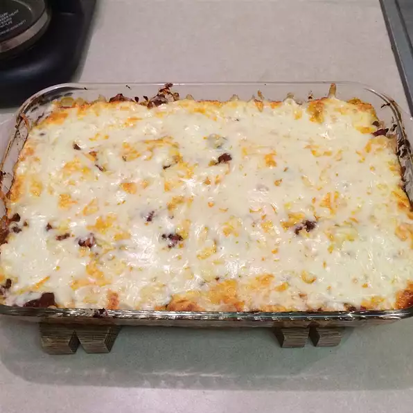

Lasange

Description
Cheap Classic Lasange Recipe
Ingrediants
- 16 ounce of Lasange Pasta
- 1 pound lean ground beef
- salt and pepper
- 16 ounce Spaggetti Sauce
- 1 clover garlic
- 1/2 pound shredded mozzeralla
- 1/2 pound shredded cheddar cheese
- 1 pint richotta cheese
Steps to Recipe
- Bring a large pot of lightly salted water to a boil. Add pasta and cook for 8 to 10 minutes or until al dente; drain.
- Preheat oven to 350 degrees F (175 degrees C). In a large skillet over medium-high heat,
brown beef and season with salt and pepper; drain. Stir in spaghetti sauce and garlic and simmer 5 minutes.
\
- In a medium bowl, combine mozzarella, Cheddar and ricotta; stir well. In 9x13 inch pan, alternate layers of noodles,
meat mixture and cheese mixture until pan is filled.
- Bake in preheated oven for 30 minutes, or until cheese is melted and bubbly.
Back to Recipes